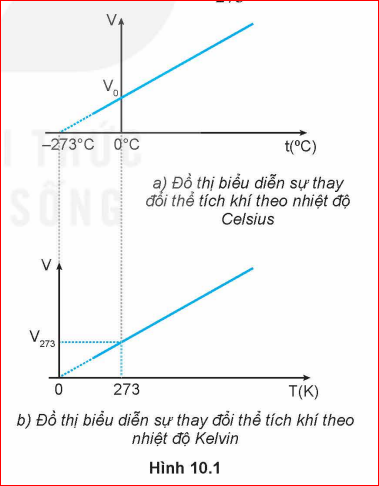
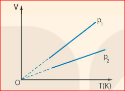
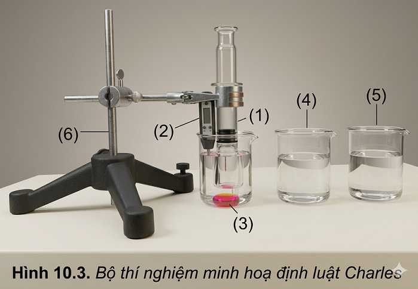
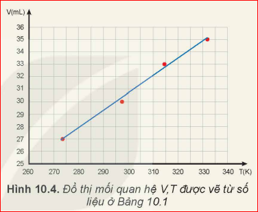

Khi giữ nguyên áp suất của một khối lượng khí xác định thì thể tích của khí phụ thuộc như thế nào vào nhiệt độ của nó?
Quá trình đẳng áp: Quá trình biến đổi trạng thái của một khối lượng khí xác định khi giữ áp suất không đổi được gọi là quá trình đẳng áp.
Năm 1787, nhà vật lí người Pháp là Charles (Sác-lơ) đã dùng thực nghiệm để nghiên cứu sự thay đổi thể tích theo nhiệt độ của một khối lượng khí xác định trong quá trình đẳng áp. Làm thí nghiệm với các chất khí khác nhau, ông nhận thấy khi tăng nhiệt độ khí từ \(t_0 = 0^\circ\text{C}\) tới \(t^\circ\text{C}\) đồng thời giữ áp suất không đổi thì độ tăng thể tích của 1 đơn vị thể tích khí khi được tăng thêm 1 đơn vị nhiệt độ của các chất khí khác nhau đều bằng nhau và bằng:
Trong đó \(V_0\) là thể tích khí ở nhiệt độ \(0^\circ\text{C}\); \(V\) là thể tích khí ở nhiệt độ \(t^\circ\text{C}\); \(\Delta t\) là độ tăng nhiệt độ của khí.
Nếu kí hiệu \(\alpha = \frac{1}{273}\) thì hệ thức trở thành: \(V = V_0(1 + \alpha \cdot \Delta t)\)
Vì \(\Delta t = t - t_0 = t\) nên:

Hình 10.1. a) Đồ thị thể tích theo nhiệt độ Celsius | b) Đồ thị thể tích theo nhiệt độ Kelvin❓ 1. Hãy giải thích cách vẽ đồ thị của hàm \(V = V_0(1 + \alpha \cdot t)\) trong Hình 10.1a.
Hàm số \(V = V_0 + V_0 \cdot \alpha \cdot t\) có dạng hàm bậc nhất \(y = ax + b\) đối với biến \(t\):
❓ 2. Hãy chứng tỏ rằng nếu đổi nhiệt độ Celsius \(t\) trong hệ thức (10.2) sang nhiệt độ Kelvin \(T\) tương ứng thì sẽ được một hệ thức mới chứng tỏ thể tích \(V\) của chất khí tỉ lệ thuận với nhiệt độ Kelvin: \(\frac{V}{T} = \text{hằng số}\).
Thay \(\alpha = \frac{1}{273}\) vào (10.2):
\[ V = V_0 \left(1 + \frac{t}{273}\right) = V_0 \cdot \left(\frac{273 + t}{273}\right) \]
Vì nhiệt độ tuyệt đối \(T = t + 273\), suy ra:
\[ V = V_0 \cdot \frac{T}{273} \implies \frac{V}{T} = \frac{V_0}{273} = \text{hằng số} \]
📜 ĐỊNH LUẬT CHARLES:
Khi áp suất của một khối lượng khí xác định giữ không đổi thì thể tích của khí tỉ lệ thuận với nhiệt độ tuyệt đối của nó:
Trong đó \(V_1, T_1\) là thể tích và nhiệt độ tuyệt đối ở trạng thái 1; \(V_2, T_2\) ở trạng thái 2.
🌡️ ĐỘ KHÔNG TUYỆT ĐỐI:
Đồ thị vẽ ở Hình 10.1a cho thấy nếu kéo dài đường biểu diễn thì đường này sẽ cắt trục nhiệt độ ở \(-273^\circ\text{C}\). Ở nhiệt độ này, thể tích của lượng khí sẽ bằng 0. Điều này chứng tỏ người ta không thể hạ nhiệt độ xuống tới \(-273^\circ\text{C}\) vì thể tích của một lượng khí không thể bằng 0. Chính vì thế mà người ta gọi nhiệt độ này là độ không tuyệt đối và dùng nó làm mốc nhiệt độ thấp nhất của thang nhiệt độ Kelvin (\(0\text{ K}\)).

Hình 10.2. Các đường đẳng áp trong hệ \((V, T)\)❓ 1. Ứng với các áp suất khác nhau của cùng một lượng khí, ta có những đường đẳng áp khác nhau. Hình 10.2 vẽ hai đường đẳng áp ứng với áp suất \(p_1\) và \(p_2\). Hãy so sánh \(p_1\) và \(p_2\).
Ta có \(p_1 < p_2\).
Giải thích: Kẻ một đường thẳng vuông góc với trục \(T\) (cố định cùng một nhiệt độ \(T\)). Đường nằm trên cho thể tích lớn hơn (\(V_1 > V_2\)). Tại cùng nhiệt độ, thể tích lớn hơn thì áp suất phải nhỏ hơn (theo định luật Boyle), do đó \(p_1 < p_2\).
❓ 2. Hãy tìm ví dụ về ứng dụng định luật Charles trong đời sống.
Chuẩn bị:
Tiến hành:

Hình 10.3. Bộ thí nghiệm minh họa định luật CharlesBảng 10.1. Ví dụ về kết quả thí nghiệm minh họa định luật Charles
| Lần thí nghiệm | \(t (^\circ\text{C})\) | \(T (\text{K})\) | \(V (\text{mL})\) | Tỉ số \(\frac{V}{T} (\text{mL/K})\) |
|---|---|---|---|---|
| 1 | 24,5 | 297,5 | 30 | 0,1008 |
| 2 | 0,5 | 273,5 | 27 | 0,0987 |
| 3 | 41,5 | 314,5 | 33 | 0,1049 |
| 4 | 59,3 | 332,3 | 35 | 0,1053 |

Hình 10.4. Đồ thị mối quan hệ V, T từ Bảng 10.1❓ Từ kết quả thí nghiệm, hãy:
Trả lời:
1. Tỉ số \(\frac{V}{T}\) thu được qua các lần đo xấp xỉ bằng nhau (\(\approx 0,10\text{ mL/K}\)) và đồ thị gần như là đường thẳng, phù hợp với định luật Charles.
2. Pit-tông tự do dịch chuyển nhẹ nhàng dưới tác dụng của áp suất khí quyển bên ngoài tác dụng lên nó, làm cho áp suất khí bên trong xilanh luôn bằng áp suất khí quyển bên ngoài (không đổi).
📝 BÀI TẬP VÍ DỤ (SGK):
Khi tăng nhiệt độ của một lượng khí xác định từ \(32^\circ\text{C}\) lên \(117^\circ\text{C}\) và giữ áp suất không đổi thì thể tích khí tăng thêm \(1,7\text{ lít}\). Tìm thể tích của lượng khí trước và sau khi tăng nhiệt độ.
Bài giải:
Hiện tượng trong bài là quá trình đẳng áp.
Trạng thái 1: \(T_1 = 32 + 273 = 305\text{ K}\); \(V_1\).
Trạng thái 2: \(T_2 = 117 + 273 = 390\text{ K}\); \(V_2 = V_1 + 1,7\text{ L}\).
Áp dụng định luật Charles: \(\frac{V_1}{T_1} = \frac{V_2}{T_2}\)
\[ \frac{V_1}{305} = \frac{V_1 + 1,7}{390} \implies 390 \cdot V_1 = 305 \cdot V_1 + 305 \times 1,7 \]
\[ 85 \cdot V_1 = 518,5 \implies V_1 = 6,1\text{ (L)} \]
\[ V_2 = 6,1 + 1,7 = 7,8\text{ (L)} \]
💪 BÀI TẬP VẬN DỤNG SGK:
1. Thể tích của một lượng khí xác định tăng thêm 10% khi nhiệt độ của khí được tăng tới \(47^\circ\text{C}\). Xác định nhiệt độ ban đầu của lượng khí, biết quá trình trên là đẳng áp.
Lời giải:
Trạng thái 1: \(V_1\), \(T_1 = ?\)
Trạng thái 2: \(V_2 = V_1 + 0,1 \cdot V_1 = 1,1 \cdot V_1\); \(T_2 = 47 + 273 = 320\text{ K}\).
Áp dụng định luật Charles:
\[ \frac{V_1}{T_1} = \frac{V_2}{T_2} \implies \frac{V_1}{T_1} = \frac{1,1 \cdot V_1}{320} \implies T_1 = \frac{320}{1,1} \approx 290,9\text{ (K)} \]
Nhiệt độ Celsius ban đầu: \(t_1 = 290,9 - 273 = 17,9^\circ\text{C}\).
2. Một khối lượng khí \(12\text{ g}\) có thể tích \(4\text{ lít}\) ở nhiệt độ \(7^\circ\text{C}\). Sau khi được đun nóng đẳng áp thì khối lượng riêng của khí là \(1,2\text{ g/lít}\). Xác định nhiệt độ của khí sau khi được đun nóng.
Lời giải:
Trạng thái 1: \(V_1 = 4\text{ L}\), \(T_1 = 7 + 273 = 280\text{ K}\).
Trạng thái 2: Khối lượng khí không đổi \(m = 12\text{ g}\). Thể tích khí lúc sau là:
\[ V_2 = \frac{m}{\rho_2} = \frac{12}{1,2} = 10\text{ (L)} \]
Áp dụng định luật Charles cho quá trình đẳng áp:
\[ \frac{V_1}{T_1} = \frac{V_2}{T_2} \implies \frac{4}{280} = \frac{10}{T_2} \implies T_2 = \frac{10 \times 280}{4} = 700\text{ (K)} \]
Nhiệt độ Celsius lúc sau: \(t_2 = 700 - 273 = 427^\circ\text{C}\).
■ Định luật Charles:
Khi áp suất của một khối lượng khí xác định giữ không đổi thì thể tích của khí tỉ lệ thuận với nhiệt độ tuyệt đối của nó:
Dùng định luật Charles giải thích được các hiện tượng thực tế có liên quan.
Chinh phục 10 câu hỏi củng cố về Định luật Charles & Quá trình đẳng áp!
Câu 1: Quá trình đẳng áp là quá trình biến đổi trạng thái của một lượng khí trong đó:
Câu 2: Hệ thức nào sau đây biểu diễn đúng định luật Charles?
Câu 3: Đồ thị biểu diễn đường đẳng áp trong hệ tọa độ (V, T) có dạng là:
Câu 4: Mốc nhiệt độ "Độ không tuyệt đối" tương ứng với giá trị nào sau đây?
Câu 5: Trong quá trình đẳng áp của một khối lượng khí xác định, khi nhiệt độ tuyệt đối T tăng lên 3 lần thì thể tích V sẽ:
Câu 6: Trên đồ thị (V, T), hai đường đẳng áp p1 và p2 cắt nhau tại O. Nếu đường p1 nằm phía trên đường p2 thì:
Câu 7: Khí lí tưởng được định nghĩa là chất khí:
Câu 8: Một khối khí ở 27°C có thể tích 3 L. Đun nóng đẳng áp đến 127°C thì thể tích khối khí lúc sau là:
Câu 9: Công thức chuyển đổi từ nhiệt độ Celsius (t) sang nhiệt độ Kelvin (T) là:
Câu 10: Ứng dụng nào sau đây dựa trên định luật Charles?
Bài 1:
Một khối khí lí tưởng có thể tích \(6\text{ lít}\) ở nhiệt độ \(27^\circ\text{C}\). Giữ cho áp suất khí không đổi, đun nóng khí đến nhiệt độ \(227^\circ\text{C}\). Tính thể tích của khối khí ở nhiệt độ mới.
Lời giải:
Trạng thái 1: \(V_1 = 6\text{ L}\), \(T_1 = 27 + 273 = 300\text{ K}\).
Trạng thái 2: \(T_2 = 227 + 273 = 500\text{ K}\), \(V_2 = ?\)
Vì quá trình là đẳng áp, áp dụng định luật Charles:
\[ \frac{V_1}{T_1} = \frac{V_2}{T_2} \implies V_2 = \frac{V_1 \cdot T_2}{T_1} = \frac{6 \times 500}{300} = 10\text{ (lít)} \]
Đáp số: \(10\text{ lít}\).
Bài 2:
Một lượng khí ở nhiệt độ \(15^\circ\text{C}\) có thể tích \(V_1\). Nếu làm lạnh đẳng áp lượng khí đó để thể tích giảm đi \(20\%\) so với ban đầu thì nhiệt độ lúc sau của khối khí bằng bao nhiêu \(^\circ\text{C}\)?
Lời giải:
Trạng thái 1: \(V_1\), \(T_1 = 15 + 273 = 288\text{ K}\).
Trạng thái 2: Thể tích giảm \(20\%\) nên \(V_2 = V_1 - 0,2 \cdot V_1 = 0,8 \cdot V_1\).
Áp dụng định luật Charles:
\[ \frac{V_1}{T_1} = \frac{V_2}{T_2} \implies T_2 = T_1 \cdot \frac{V_2}{V_1} = 288 \times 0,8 = 230,4\text{ (K)} \]
Nhiệt độ Celsius tương ứng:
\[ t_2 = 230,4 - 273 = -42,6^\circ\text{C} \]
Đáp số: \(-42,6^\circ\text{C}\).
Bài 3:
Khí cầu có thể tích \(2000\text{ m}^3\) chứa không khí ở nhiệt độ \(27^\circ\text{C}\). Muốn làm cho khí cầu bay lên, người ta đun nóng không khí trong khí cầu đến \(127^\circ\text{C}\) ở áp suất khí quyển không đổi. Tính khối lượng không khí đã thoát ra khỏi khí cầu. Cho biết khối lượng riêng của không khí ở \(27^\circ\text{C}\) là \(1,2\text{ kg/m}^3\).
Lời giải:
Khối lượng không khí ban đầu trong khí cầu (\(V_1 = 2000\text{ m}^3\), \(T_1 = 27 + 273 = 300\text{ K}\)) là:
\[ m = \rho_1 \cdot V_1 = 1,2 \times 2000 = 2400\text{ (kg)} \]
Khi đun nóng đến \(T_2 = 127 + 273 = 400\text{ K}\), toàn bộ khối lượng \(m = 2400\text{ kg}\) khí này sẽ nở ra chiếm thể tích \(V_2\):
\[ \frac{V_1}{T_1} = \frac{V_2}{T_2} \implies V_2 = V_1 \cdot \frac{T_2}{T_1} = 2000 \times \frac{400}{300} = \frac{8000}{3}\text{ (m}^3\text{)} \]
Khối lượng riêng của khí ở nhiệt độ \(127^\circ\text{C}\) là:
\[ \rho_2 = \frac{m}{V_2} = \frac{2400}{\frac{8000}{3}} = 0,9\text{ (kg/m}^3\text{)} \]
Khối lượng khí còn lại trong vỏ khí cầu (dung tích \(2000\text{ m}^3\)) là:
\[ m' = \rho_2 \cdot V_1 = 0,9 \times 2000 = 1800\text{ (kg)} \]
Khối lượng không khí đã thoát ra ngoài vỏ khí cầu là:
\[ \Delta m = m - m' = 2400 - 1800 = 600\text{ (kg)} \]
Đáp số: \(600\text{ kg}\).